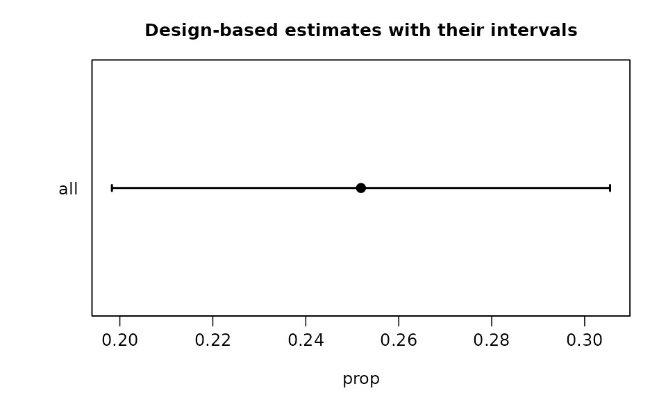

Surveys and summary statistics
Source:vignettes/surveys-and-summaries.Rmd
surveys-and-summaries.RmdSurvey estimates with their design, and the summary statistics the rest of the package is built on.
Each section is one help page: what the function is for, the example
of its help page as it runs, and the plot of its result where the
package draws one. ?name gives the arguments and the value
in full.
Surveys
Design-based estimates from a complex survey
svymx(): Means, totals, proportions, ratios and
variances from a stratified, clustered, weighted sample (a victimisation
survey, say), with standard errors by linearisation that respect the
design, by domain and with the differences between domains; and a
description of the design.
set.seed(1)
d <- data.frame(region = rep(c("north", "south"), each = 60),
block = rep(1:12, each = 10),
victim = rbinom(120, 1, rep(c(0.2, 0.35), each = 60)),
w = runif(120, 50, 150))
svymx(d$victim, d$w, d$region, d$block, stat = "prop")
#> svymx: prop, 120 respondents, 2 strata, 12 first-stage units
#> dom est se lo hi cv n df
#> all 0.2518814 0.02405017 0.1982943 0.3054685 9.54821 120 10
svymx(d$victim, d$w, d$region, d$block, stat = "prop", by = d$region)$cmp
#> dom diff se stat p
#> 1 south 0.2234697 0.04419731 5.056184 0.0004947409
Rao-Scott chi-square test for a survey table
rscchi(): The test of independence of two categorical
variables in a two-way table from a stratified, clustered and weighted
sample (a victimisation or justice survey, say), with Rao and Scott’s
corrections for the design, to go with the estimates of
svymx() and the tables of ctabx(). Pearson’s
statistic on such data is too large: the design makes the cell
proportions vary more than simple random sampling, and the corrections
divide it by the design effects.
set.seed(1)
d <- data.frame(region = rep(c("north", "south"), each = 60),
block = rep(1:12, each = 10),
age = sample(c("young", "middle", "old"), 120, TRUE),
w = runif(120, 50, 150))
d$victim <- rbinom(120, 1, ifelse(d$age == "young", 0.35, 0.2))
rscchi(d$age, d$victim, d$w, d$region, d$block)
#> rscchi: 3 x 2 table, 120 respondents, 2 strata, 12 first-stage units
#> test stat df1 df2 p
#> pearson 5.539 2.000 NA 0.06271
#> rs1 3.254 2.000 NA 0.19650
#> rs2 3.134 1.926 NA 0.19750
#> f 1.627 1.926 19.26 0.22264Summary statistics
Mean, variance and correlation (C backend)
cmn(), cvari(), ccorr():
cmn(), cvari() and ccorr()
compute the mean, the sample variance and the Pearson correlation in
compiled code, the same kernels that crimlab’s other front ends (the
command line, Python and the bindings) call, so a result computed here
is the result they give. For everyday work mean(),
var() and cor() give the same numbers.
cmn(1:10)
#> [1] 5.5
cmn(c(1, 2, NA))
#> [1] NA
cmn(c(1e308, 1e308))
#> [1] 1e+308
cvari(c(2, 4, 4, 4, 5, 5, 7, 9))
#> [1] 4.571429
all.equal(cvari(1:10), stats::var(1:10))
#> [1] TRUE
ccorr(1:10, (1:10)^2)
#> [1] 0.9745586
ccorr(1:10, 10:1)
#> [1] -1
try(cmn(c("1", "2")))
#> Error : cmn: `x` must be numbers (or TRUE and FALSE).
try(ccorr(1:3, 1:4))
#> Error : ccorr: `x` and `y` must have the same length.Standard deviation and Euclidean distance (C backend)
csdev(), cdistm(): csdev()
returns the standard deviation of a numeric vector and
cdistm() the straight-line (Euclidean) distance between two
vectors of the same length.
Normal density and log-density (C backend)
cnormpdf(), cnormlpdf():
cnormpdf() evaluates the density of the normal distribution
with a given mean and standard deviation at each value of
x; cnormlpdf() its logarithm, computed
directly from the formula rather than as log(dnorm(x)).
Summing log-densities is how a normal model is scored, and computing
them directly keeps the sum finite far into the tails, where the density
itself underflows to zero.
cnormpdf(c(-1, 0, 1))
#> [1] 0.2419707 0.3989423 0.2419707
cnormpdf(c(0, 5, 10), mean = 5, sd = 2)
#> [1] 0.00876415 0.19947114 0.00876415
all.equal(cnormpdf(-2:2), stats::dnorm(-2:2))
#> [1] TRUE
stats::dnorm(50)
#> [1] 0
cnormlpdf(50)
#> [1] -1250.919
y <- c(4.8, 5.1, 5.6, 4.9, 5.3)
sum(cnormlpdf(y, mean = mean(y), sd = stats::sd(y)))
#> [1] -0.9121269
try(cnormpdf(0, sd = 0))
#> Error : cnormpdf: `sd` must be one positive finite number.
try(cnormlpdf(1, mean = c(0, 1)))
#> Error : cnormlpdf: `mean` must be one finite number.Mean, variance, skewness and kurtosis (C backend)
cmom(): The four standard descriptive moments of a
numeric vector in one call: where it is centred, how spread out it is,
whether it leans to one side and how heavy its tails are.
Quantiles, median and robust spread (C backend)
cqnt(), cmed(), cmad(),
ciqr() and others: cqnt() is the type-7
quantile, R’s default, so it agrees with
stats::quantile(x, probs). cmed() is the 50%
point. cmad() is the median absolute deviation scaled by
const so that it estimates the standard deviation of a
normal sample. ciqr() is the interquartile range and
ctkyfnc() the outlier fences drawn k IQRs
beyond the quartiles. A single corrupted row can move a mean or a
variance arbitrarily far, but moves a median or a MAD hardly at all,
which is what is wanted when screening a column of a released table for
values to inspect by hand.
x <- c(2, 4, 4, 4, 5, 5, 7, 9)
cqnt(x, c(0.25, 0.5, 0.75))
#> 25% 50% 75%
#> 4.0 4.5 5.5
cmed(x)
#> [1] 4.5
cmad(x)
#> [1] 0.7413
all.equal(cmad(x), stats::mad(x))
#> [1] TRUE
ciqr(x)
#> [1] 1.5
ctkyfnc(x)
#> lower upper
#> 1.75 7.75
wild <- c(x, 1000)
f <- ctkyfnc(wild)
wild[wild < f[["lower"]] | wild > f[["upper"]]]
#> [1] 1000
cmed(c(1, NA, 3))
#> [1] NaN
try(cqnt(x, 1.5))
#> Error : cqnt: `probs` must lie in [0, 1].Trimmed and winsorized means (C backend)
ctrmmean(), cwinsmean(): Two ways to stop a
handful of extreme rows dominating a column’s centre.
ctrmmean() DISCARDS the floor(n * trim)
largest and smallest values, as mean(x, trim = ) does.
cwinsmean() instead PULLS THEM IN to the most extreme
surviving values, so every observation still counts, usually the better
choice when the extremes are real measurements rather than errors.
x <- c(1, 2, 3, 4, 5, 6, 7, 8, 9, 100)
mean(x)
#> [1] 14.5
ctrmmean(x, 0.1)
#> [1] 5.5
cwinsmean(x, 0.1)
#> [1] 5.5
all.equal(ctrmmean(x, 0.2), mean(x, trim = 0.2))
#> [1] TRUE
all.equal(ctrmmean(x, 0.5), cmed(x))
#> [1] TRUE
try(cwinsmean(x, 0.7))
#> Error : cwinsmean: `trim` must be one number from 0 to 0.5.Weighted mean and variance (C backend)
cwtd(): The weighted mean and variance of a numeric
vector, for data where some observations count for more than others: an
average over areas weighted by population, or measurements weighted by
their precision.
x <- c(10, 20, 30, 40)
w <- c(1, 1, 2, 4)
cwtd(x, w)
#> mean variance
#> 31.2500 169.0476
all.equal(cwtd(x, w)[["mean"]], stats::weighted.mean(x, w))
#> [1] TRUE
all.equal(cwtd(x, rep(1, 4))[["variance"]], stats::var(x))
#> [1] TRUE
try(cwtd(x, c(1, -1, 1, 1)))
#> Error : cwtd: `w` must be non-negative and finite, not all zero.Rank correlation and midranks (C backend)
cspr(), cmidrk(): cspr() is
Spearman’s rho, the Pearson correlation of the ranks: it measures
monotone association and is unaffected by any order-preserving
transformation of either variable. cmidrk() gives the ranks
themselves; tied values share the average of the ranks they span, which
is what makes the result agree with stats::cor() on tied
data.
x <- c(1, 2, 3, 4, 5)
y <- c(2, 4, 9, 16, 25)
cspr(x, y)
#> [1] 1
ccorr(x, y)
#> [1] 0.9737247
xt <- c(1, 2, 2, 2, 5, 5, 7)
yt <- c(3, 1, 1, 4, 4, 9, 2)
all.equal(cspr(xt, yt), stats::cor(xt, yt, method = "spearman"))
#> [1] TRUE
cmidrk(xt)
#> [1] 1.0 3.0 3.0 3.0 5.5 5.5 7.0
cmidrk(c(3, NA, 1, 3))
#> [1] 2.5 NA 1.0 2.5
try(cspr(1:3, 1:4))
#> Error : cspr: `x` and `y` must have the same length.Covariance matrix (C backend)
ccovm(): The covariance of every pair of columns of a
numeric matrix or data frame. Column names are carried to both
dimensions of the result.
X <- cbind(a = c(1, 2, 3, 4), b = c(2, 4, 7, 8), c = c(5, 3, 2, 1))
ccovm(X)
#> a b c
#> a 1.666667 3.500000 -2.166667
#> b 3.500000 7.583333 -4.583333
#> c -2.166667 -4.583333 2.916667
all.equal(ccovm(X), stats::cov(X))
#> [1] TRUE
ccovm(data.frame(u = 1:5, v = c(2, 1, 4, 3, 6)))
#> u v
#> u 2.5 2.5
#> v 2.5 3.7
try(ccovm(1:5))
#> Error : ccovm: `x` must be a numeric matrix or data frame.Bootstrap replicate means (C backend)
cbootmean(): B resamples of x,
drawn with replacement and each the length of x, with the
mean of each. The spread of these replicate means estimates the standard
error of the sample mean, and their quantiles give a percentile
interval, without assuming the data are normal (Efron and Tibshirani,
1993). The draws come from the core’s own 64-bit Mersenne Twister seeded
by seed, not from R’s generator, so a seed gives the same
replicates in every front end and on every platform, and R’s random
stream is left untouched.
set.seed(1)
x <- stats::rnorm(50, mean = 5)
reps <- cbootmean(x, B = 500, seed = 7)
c(sample = mean(x), bootstrap = mean(reps))
#> sample bootstrap
#> 5.100448 5.097066
stats::quantile(reps, c(0.025, 0.975))
#> 2.5% 97.5%
#> 4.864298 5.311439
identical(cbootmean(x, 10, seed = 1), cbootmean(x, 100, seed = 1)[1:10])
#> [1] TRUE
try(cbootmean(x, B = 0))
#> Error : cbootmean: `B` must be one whole number from 1.Trimmed inverse-probability weights (C backend)
cipw(): The inverse-probability-of-treatment weights 1/e
for the treated and 1/(1-e) for the untreated, with the propensity score
clamped into [trimlo, trimhi] first: an untrimmed score near 0 or 1
gives one observation a weight large enough to dominate the estimate.
The weights reweight a treated and an untreated group so that each
resembles the whole sample on the covariates behind the propensity score
(Rosenbaum and Rubin, 1983).
cipw(c(1, 0, 1, 0), c(0.5, 0.25, 0.02, 0.9))
#> [1] 2.000000 1.333333 50.000000 10.000000
cipw(c(1, 0, 1, 0), c(0.5, 0.25, 0.02, 0.9), trimlo = 0.1)
#> [1] 2.000000 1.333333 10.000000 10.000000
cipw(c(TRUE, FALSE), c(0.4, 0.4))
#> [1] 2.500000 1.666667
try(cipw(c(1, 2), c(0.5, 0.5)))
#> Error : cipw: `treat` must be coded 0/1.Regularized incomplete gamma function (C backend)
cgamcdf(): The lower regularized incomplete gamma
function P(a, x), the distribution function of a gamma distribution with
shape a and unit rate; the p-value of a chi-square
statistic q on k degrees of freedom is 1 - P(k/2, q/2).
cgamcdf(3.5, c(0.5, 1, 4, 12))
#> [1] 0.005171463 0.040159631 0.667406097 0.998860649
all.equal(cgamcdf(3.5, c(0.5, 1, 4, 12)),
stats::pgamma(c(0.5, 1, 4, 12), shape = 3.5))
#> [1] TRUE
1 - cgamcdf(2 / 2, 5.99 / 2)
#> [1] 0.05003663
try(cgamcdf(0, 1))
#> Error : cgamcdf: `shape` must be one positive number.Reproducible uniforms (splitmix64)
cunif(): Returns n pseudo-random numbers on
[0, 1) from a 64-bit seed with the splitmix64 generator. The stream
depends only on seed, and any program that implements
splitmix64 (Python, Go, a spreadsheet macro) computes the same numbers,
so a subsample or a jitter drawn in one language can be reproduced
exactly in another.
cunif(3, 42)
#> [1] 0.7415649 0.1599104 0.2786011
all.equal(cunif(3, 7), cunif(10, 7)[1:3])
#> [1] TRUE
set.seed(1)
a <- runif(1)
set.seed(1)
invisible(cunif(100, 9))
b <- runif(1)
identical(a, b)
#> [1] TRUE
try(cunif(-1, 1))
#> Error : cunif: `n` must be one whole number from 0.
try(cunif(2, 2^53))
#> Error : cunif: `seed` must be one whole number from 0, below 2^53.